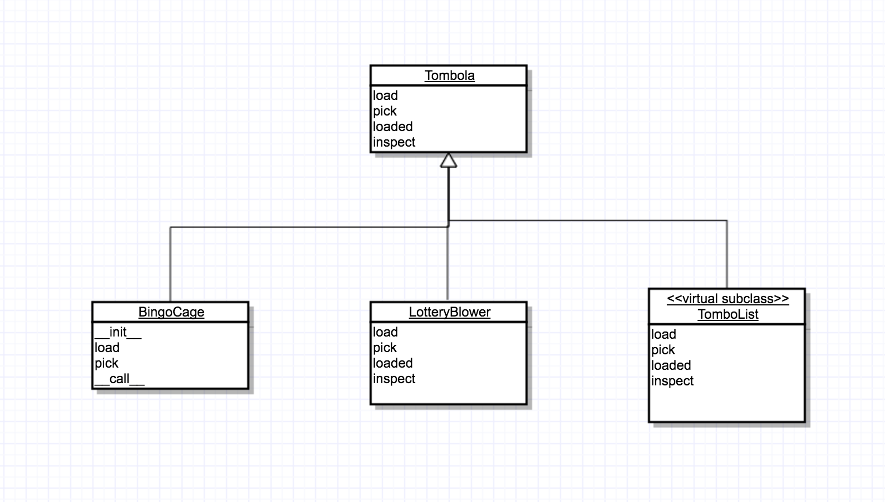

<!doctype html>


  


<html class="theme-next muse use-motion" lang="">
<head>
  <meta charset="UTF-8"/>
<meta http-equiv="X-UA-Compatible" content="IE=edge" />
<meta name="viewport" content="width=device-width, initial-scale=1, maximum-scale=1"/>


<meta http-equiv="Cache-Control" content="no-transform" />
<meta http-equiv="Cache-Control" content="no-siteapp" />


  
  
  <link href="/lib/fancybox/source/jquery.fancybox.css?v=2.1.5" rel="stylesheet" type="text/css" />


  
  
  
  

  
    
    
  

  

  

  

  

  
    
    
    <link href="//fonts.googleapis.com/css?family=Lato:300,300italic,400,400italic,700,700italic&subset=latin,latin-ext" rel="stylesheet" type="text/css">
  


<link href="/lib/font-awesome/css/font-awesome.min.css?v=4.6.2" rel="stylesheet" type="text/css" />

<link href="/css/main.css?v=5.1.0" rel="stylesheet" type="text/css" />


  <meta name="keywords" content="Python," />


  <link rel="shortcut icon" type="image/x-icon" href="/favicon.ico?v=5.1.0" />


<meta name="description" content="Python文化中的接口和协议Python在ABCs引入之前已经很成功了.接口在动态语言中是如何工作的。其没有interface关键字。对于ABCs，每个类有个接口。协议是接口。接口的定义是对象公共方法的子集，能够实现特定的功能。Python中最基础的接口之一是序列协议
运行中实现协议123l = list(range(10))shuffle(l)print(l)

对于普通自定义对象，如果想使">
<meta property="og:type" content="article">
<meta property="og:title" content="深入理解Python之接口">
<meta property="og:url" content="http://xu6148152.github.io/2017/05/30/深入理解Python之接口/index.html">
<meta property="og:site_name" content="Blog">
<meta property="og:description" content="Python文化中的接口和协议Python在ABCs引入之前已经很成功了.接口在动态语言中是如何工作的。其没有interface关键字。对于ABCs，每个类有个接口。协议是接口。接口的定义是对象公共方法的子集，能够实现特定的功能。Python中最基础的接口之一是序列协议
运行中实现协议123l = list(range(10))shuffle(l)print(l)

对于普通自定义对象，如果想使">
<meta property="og:image" content="http://xu6148152.github.io/./tombola.png">
<meta property="og:updated_time" content="2017-05-30T08:42:42.000Z">
<meta name="twitter:card" content="summary">
<meta name="twitter:title" content="深入理解Python之接口">
<meta name="twitter:description" content="Python文化中的接口和协议Python在ABCs引入之前已经很成功了.接口在动态语言中是如何工作的。其没有interface关键字。对于ABCs，每个类有个接口。协议是接口。接口的定义是对象公共方法的子集，能够实现特定的功能。Python中最基础的接口之一是序列协议
运行中实现协议123l = list(range(10))shuffle(l)print(l)

对于普通自定义对象，如果想使">
<meta name="twitter:image" content="http://xu6148152.github.io/./tombola.png">


<script type="text/javascript" id="hexo.configurations">
  var NexT = window.NexT || {};
  var CONFIG = {
    root: '/',
    scheme: 'Muse',
    sidebar: {"position":"left","display":"post"},
    fancybox: true,
    motion: true,
    duoshuo: {
      userId: '0',
      author: 'Author'
    },
    algolia: {
      applicationID: '',
      apiKey: '',
      indexName: '',
      hits: {"per_page":10},
      labels: {"input_placeholder":"Search for Posts","hits_empty":"We didn't find any results for the search: ${query}","hits_stats":"${hits} results found in ${time} ms"}
    }
  };
</script>


  <link rel="canonical" href="http://xu6148152.github.io/2017/05/30/深入理解Python之接口/"/>


  <title> 深入理解Python之接口 | Blog </title>
</head>

<body itemscope itemtype="http://schema.org/WebPage" lang="">

  


  
  
    
  

  <div class="container one-collumn sidebar-position-left page-post-detail ">
    <div class="headband"></div>

    <header id="header" class="header" itemscope itemtype="http://schema.org/WPHeader">
      <div class="header-inner"><div class="site-meta ">
  

  <div class="custom-logo-site-title">
    <a href="/"  class="brand" rel="start">
      <span class="logo-line-before"><i></i></span>
      <span class="site-title">Blog</span>
      <span class="logo-line-after"><i></i></span>
    </a>
  </div>
    
      <p class="site-subtitle"></p>
    
</div>

<div class="site-nav-toggle">
  <button>
    <span class="btn-bar"></span>
    <span class="btn-bar"></span>
    <span class="btn-bar"></span>
  </button>
</div>

<nav class="site-nav">
  

  
    <ul id="menu" class="menu">
      
        
        <li class="menu-item menu-item-home">
          <a href="/" rel="section">
            
              <i class="menu-item-icon fa fa-fw fa-home"></i> <br />
            
            Startseite
          </a>
        </li>
      
        
        <li class="menu-item menu-item-archives">
          <a href="/archives" rel="section">
            
              <i class="menu-item-icon fa fa-fw fa-archive"></i> <br />
            
            Archiv
          </a>
        </li>
      
        
        <li class="menu-item menu-item-tags">
          <a href="/tags" rel="section">
            
              <i class="menu-item-icon fa fa-fw fa-tags"></i> <br />
            
            Tags
          </a>
        </li>
      

      
    </ul>
  

  
</nav>


 </div>
    </header>

    <main id="main" class="main">
      <div class="main-inner">
        <div class="content-wrap">
          <div id="content" class="content">
            

  <div id="posts" class="posts-expand">
    

  

  
  
  

  <article class="post post-type-normal " itemscope itemtype="http://schema.org/Article">
  <link itemprop="mainEntityOfPage" href="http://xu6148152.github.io/2017/05/30/深入理解Python之接口/">

  <span style="display:none" itemprop="author" itemscope itemtype="http://schema.org/Person">
    <meta itemprop="name" content="Binea">
    <meta itemprop="description" content="">
    <meta itemprop="image" content="/upload_file/tmp.jpg">
  </span>

  <span style="display:none" itemprop="publisher" itemscope itemtype="http://schema.org/Organization">
    <meta itemprop="name" content="Blog">
    <span style="display:none" itemprop="logo" itemscope itemtype="http://schema.org/ImageObject">
      
    </span>
  </span>

    
      <header class="post-header">

        
        
          <h1 class="post-title" itemprop="name headline">
            
            
              
                深入理解Python之接口
              
            
          </h1>
        

        <div class="post-meta">
          <span class="post-time">
            
              <span class="post-meta-item-icon">
                <i class="fa fa-calendar-o"></i>
              </span>
              
                <span class="post-meta-item-text">Veröffentlicht am</span>
              
              <time title="Post created" itemprop="dateCreated datePublished" datetime="2017-05-30T16:38:58+08:00">
                2017-05-30
              </time>
            

            

            
          </span>

          

          
            
          

          

          
          

          

          

        </div>
      </header>
    


    <div class="post-body" itemprop="articleBody">

      
      

      
        <h3 id="Python文化中的接口和协议"><a href="#Python文化中的接口和协议" class="headerlink" title="Python文化中的接口和协议"></a>Python文化中的接口和协议</h3><p><code>Python</code>在<code>ABCs</code>引入之前已经很成功了.接口在动态语言中是如何工作的。其没有<code>interface</code>关键字。对于<code>ABCs</code>，每个类有个接口。协议是接口。接口的定义是对象公共方法的子集，能够实现特定的功能。<code>Python</code>中最基础的接口之一是序列协议</p>
<h3 id="运行中实现协议"><a href="#运行中实现协议" class="headerlink" title="运行中实现协议"></a>运行中实现协议</h3><p><figure class="highlight python"><table><tr><td class="gutter"><pre><div class="line">1</div><div class="line">2</div><div class="line">3</div></pre></td><td class="code"><pre><div class="line">l = list(range(<span class="number">10</span>))</div><div class="line">shuffle(l)</div><div class="line">print(l)</div></pre></td></tr></table></figure>
</p>
<p>对于普通自定义对象，如果想使用<code>shuffle</code>那么需要实现<code>__setitem__</code>,因此可以动态设置<code>xxx.__setitem__ = set_xxx</code>。但这其中暴露了<code>__setitem__</code>给外界，破坏了封装性</p>
<h3 id="ABC子类"><a href="#ABC子类" class="headerlink" title="ABC子类"></a>ABC子类</h3><p><figure class="highlight python"><table><tr><td class="gutter"><pre><div class="line">1</div><div class="line">2</div><div class="line">3</div><div class="line">4</div><div class="line">5</div><div class="line">6</div><div class="line">7</div><div class="line">8</div><div class="line">9</div><div class="line">10</div><div class="line">11</div><div class="line">12</div><div class="line">13</div><div class="line">14</div><div class="line">15</div><div class="line">16</div><div class="line">17</div><div class="line">18</div><div class="line">19</div><div class="line">20</div><div class="line">21</div><div class="line">22</div></pre></td><td class="code"><pre><div class="line"></div><div class="line"><span class="class"><span class="keyword">class</span> <span class="title">FrenchDeck2</span><span class="params">(collections.MutableSequence)</span>:</span></div><div class="line">    ranks = [str(n) <span class="keyword">for</span> n <span class="keyword">in</span> range(<span class="number">2</span>, <span class="number">11</span>)] + list(<span class="string">'JQKA'</span>)</div><div class="line">    suits = <span class="string">'spades diamonds clubs hearts'</span>.split()</div><div class="line"></div><div class="line">    <span class="function"><span class="keyword">def</span> <span class="title">__init__</span><span class="params">(self)</span>:</span></div><div class="line">        self._cards = [Card(rank, suit) <span class="keyword">for</span> suit <span class="keyword">in</span> self.suits <span class="keyword">for</span> rank <span class="keyword">in</span> self.ranks]</div><div class="line"></div><div class="line">    <span class="function"><span class="keyword">def</span> <span class="title">__len__</span><span class="params">(self)</span>:</span></div><div class="line">        <span class="keyword">return</span> len(self._cards)</div><div class="line"></div><div class="line">    <span class="function"><span class="keyword">def</span> <span class="title">__getitem__</span><span class="params">(self, position)</span>:</span></div><div class="line">        <span class="keyword">return</span> self._cards[position]</div><div class="line"></div><div class="line">    <span class="function"><span class="keyword">def</span> <span class="title">__setitem__</span><span class="params">(self, position, value)</span>:</span></div><div class="line">        self._cards[position] = value</div><div class="line"></div><div class="line">    <span class="function"><span class="keyword">def</span> <span class="title">__delitem__</span><span class="params">(self, position)</span>:</span></div><div class="line">        <span class="keyword">del</span> self._cards[position]</div><div class="line">        </div><div class="line">    <span class="function"><span class="keyword">def</span> <span class="title">insert</span><span class="params">(self, position, value)</span>:</span></div><div class="line">        self._cards.insert(position, value)</div></pre></td></tr></table></figure>
</p>
<p>继承链是<code>MutableSequence</code>-&gt;<code>Sequence</code></p>
<h3 id="标准库中的ABCs"><a href="#标准库中的ABCs" class="headerlink" title="标准库中的ABCs"></a>标准库中的ABCs</h3><p><code>Python2.6</code>之后引入了<code>ABCs</code></p>
<h4 id="collections-abc"><a href="#collections-abc" class="headerlink" title="collections.abc"></a>collections.abc</h4><ul>
<li><code>Iterable</code>, <code>Container</code>, <code>Sized</code></li>
<li><code>Sequence</code>, <code>Mapping</code>, <code>Set</code></li>
<li><code>MappingView</code></li>
<li><code>Callable</code>, <code>Hashable</code></li>
<li><code>Iterator</code></li>
</ul>
<p>除了<code>collections.abc</code>之外，标准库中最有用的<code>ABCs</code>就是<code>numbers</code></p>
<h4 id="numbers"><a href="#numbers" class="headerlink" title="numbers"></a>numbers</h4><ul>
<li><code>Number</code></li>
<li><code>Complex</code></li>
<li><code>Real</code></li>
<li><code>Rational</code></li>
<li><code>Integral</code></li>
</ul>
<p>因此我们需要使用<code>isinstance(x, numbers.Integral)</code>来检查整形。需要注意的是<code>decimal.Decimal</code>没有成为<code>numbers.Real</code>的子类</p>
<h3 id="定义和使用ABC"><a href="#定义和使用ABC" class="headerlink" title="定义和使用ABC"></a>定义和使用ABC</h3><p>假设我们需要在网页或者<code>APP</code>上随机展示广告。我们将定义名为<code>Tombola</code>的抽象类。</p>
<p><code>Tombola</code>抽象类有四个方法。两个抽象方法是</p>
<ul>
<li><code>load()</code>: 放条目到容器中</li>
<li><code>pick()</code>: 随机移除并返回条目</li>
</ul>
<p>实体方法</p>
<ul>
<li><code>loaded()</code>: 如果容器至少有一个条目，那么返回<code>True</code></li>
<li><code>inspect()</code>: 返回排过序的的元组</li>
</ul>
<p></p>
<p><figure class="highlight python"><table><tr><td class="gutter"><pre><div class="line">1</div><div class="line">2</div><div class="line">3</div><div class="line">4</div><div class="line">5</div><div class="line">6</div><div class="line">7</div><div class="line">8</div><div class="line">9</div><div class="line">10</div><div class="line">11</div><div class="line">12</div><div class="line">13</div><div class="line">14</div><div class="line">15</div><div class="line">16</div><div class="line">17</div><div class="line">18</div><div class="line">19</div><div class="line">20</div><div class="line">21</div><div class="line">22</div><div class="line">23</div><div class="line">24</div><div class="line">25</div><div class="line">26</div><div class="line">27</div></pre></td><td class="code"><pre><div class="line"></div><div class="line"><span class="class"><span class="keyword">class</span> <span class="title">Tombola</span><span class="params">(abc.ABC)</span>:</span></div><div class="line"><span class="meta">    @abc.abstractmethod</span></div><div class="line">    <span class="function"><span class="keyword">def</span> <span class="title">load</span><span class="params">(self, iterable)</span>:</span></div><div class="line">        <span class="string">"""Add items from an iterable."""</span></div><div class="line"></div><div class="line"><span class="meta">    @abc.abstractmethod</span></div><div class="line">    <span class="function"><span class="keyword">def</span> <span class="title">pick</span><span class="params">(self)</span>:</span></div><div class="line">        <span class="string">"""Remove item at random, returning it.</span></div><div class="line"></div><div class="line">        This method should raise 'LookupError' when the instance is empty</div><div class="line">        """</div><div class="line"></div><div class="line">    <span class="function"><span class="keyword">def</span> <span class="title">loaded</span><span class="params">(self)</span>:</span></div><div class="line">        <span class="string">"""Return 'True' if there's at least 1 item, 'Falsle` otherwise."""</span></div><div class="line">        <span class="keyword">return</span> bool(self.inspect())</div><div class="line"></div><div class="line">    <span class="function"><span class="keyword">def</span> <span class="title">inspect</span><span class="params">(self)</span>:</span></div><div class="line">        <span class="string">"""Return a sorted tuple with the items currently inside."""</span></div><div class="line">        items = []</div><div class="line">        <span class="keyword">while</span> <span class="keyword">True</span>:</div><div class="line">            <span class="keyword">try</span>:</div><div class="line">                items.append(self.pick())</div><div class="line">            <span class="keyword">except</span> LookupError:</div><div class="line">                <span class="keyword">break</span></div><div class="line">        self.load(items)</div><div class="line">        <span class="keyword">return</span> tuple(sorted(items))</div></pre></td></tr></table></figure>
</p>
<p>使用<code>@abc.abstractmethod</code>标识抽象方法</p>
<p><figure class="highlight python"><table><tr><td class="gutter"><pre><div class="line">1</div><div class="line">2</div><div class="line">3</div></pre></td><td class="code"><pre><div class="line"><span class="class"><span class="keyword">class</span> <span class="title">Fake</span><span class="params">(Tombola)</span>:</span></div><div class="line">    <span class="function"><span class="keyword">def</span> <span class="title">pick</span><span class="params">(self)</span>:</span></div><div class="line">        <span class="keyword">return</span> <span class="number">13</span></div></pre></td></tr></table></figure>
</p>
<h4 id="ABC详细语法"><a href="#ABC详细语法" class="headerlink" title="ABC详细语法"></a>ABC详细语法</h4><p>声明抽象类的最好方式是继承<code>abc.ABC</code>或者其他<code>ABC</code>。然而<code>abc.ABC</code>是<code>Python3.4</code>才引入的。在这此前必须使用<code>metaclass=keyword</code></p>
<p><figure class="highlight python"><table><tr><td class="gutter"><pre><div class="line">1</div><div class="line">2</div></pre></td><td class="code"><pre><div class="line"><span class="class"><span class="keyword">class</span> <span class="title">Tombola</span><span class="params">(metaclass=abc.ABCMeta)</span>:</span></div><div class="line"><span class="comment"># ...</span></div></pre></td></tr></table></figure>
</p>
<p><code>metaclass=keyword</code>是<code>Python3</code>才引入的，<code>Python2</code>中，必须使用<code>__metaclass__</code></p>
<p><figure class="highlight python"><table><tr><td class="gutter"><pre><div class="line">1</div><div class="line">2</div></pre></td><td class="code"><pre><div class="line"><span class="class"><span class="keyword">class</span> <span class="title">Tombola</span><span class="params">(object)</span>:</span></div><div class="line">__metaclass__ = abc._ABCMeta</div></pre></td></tr></table></figure>
</p>
<h4 id="Tombola的子类"><a href="#Tombola的子类" class="headerlink" title="Tombola的子类"></a>Tombola的子类</h4><p><figure class="highlight python"><table><tr><td class="gutter"><pre><div class="line">1</div><div class="line">2</div><div class="line">3</div><div class="line">4</div><div class="line">5</div><div class="line">6</div><div class="line">7</div><div class="line">8</div><div class="line">9</div><div class="line">10</div><div class="line">11</div><div class="line">12</div><div class="line">13</div><div class="line">14</div><div class="line">15</div><div class="line">16</div><div class="line">17</div><div class="line">18</div><div class="line">19</div><div class="line">20</div><div class="line">21</div><div class="line">22</div><div class="line">23</div><div class="line">24</div><div class="line">25</div><div class="line">26</div><div class="line">27</div><div class="line">28</div><div class="line">29</div><div class="line">30</div><div class="line">31</div><div class="line">32</div><div class="line">33</div><div class="line">34</div><div class="line">35</div><div class="line">36</div><div class="line">37</div><div class="line">38</div><div class="line">39</div></pre></td><td class="code"><pre><div class="line"></div><div class="line"><span class="class"><span class="keyword">class</span> <span class="title">BingoCage</span><span class="params">(Tombola)</span>:</span></div><div class="line">    <span class="function"><span class="keyword">def</span> <span class="title">__init__</span><span class="params">(self, items)</span>:</span></div><div class="line">        self._randomizer = random.SystemRandom()</div><div class="line">        self._items = []</div><div class="line">        self.load(items)</div><div class="line"></div><div class="line">    <span class="function"><span class="keyword">def</span> <span class="title">load</span><span class="params">(self, items)</span>:</span></div><div class="line">        self._items.extend(items)</div><div class="line">        self._randomizer.shuffle(self._items)</div><div class="line"></div><div class="line">    <span class="function"><span class="keyword">def</span> <span class="title">pick</span><span class="params">(self)</span>:</span></div><div class="line">        <span class="keyword">try</span>:</div><div class="line">            <span class="keyword">return</span> self._items.pop()</div><div class="line">        <span class="keyword">except</span> IndexError:</div><div class="line">            <span class="keyword">raise</span> LookupError(<span class="string">'pick from empty BingoCage'</span>)</div><div class="line"></div><div class="line">    <span class="function"><span class="keyword">def</span> <span class="title">__call__</span><span class="params">(self)</span>:</span></div><div class="line">        self.pick()</div><div class="line"></div><div class="line"><span class="class"><span class="keyword">class</span> <span class="title">LotteryBlower</span><span class="params">(Tombola)</span>:</span></div><div class="line">    <span class="function"><span class="keyword">def</span> <span class="title">__init__</span><span class="params">(self, iterable)</span>:</span></div><div class="line">        self._balls = list(iterable)</div><div class="line"></div><div class="line">    <span class="function"><span class="keyword">def</span> <span class="title">load</span><span class="params">(self, iterable)</span>:</span></div><div class="line">        self._balls.extend(iterable)</div><div class="line"></div><div class="line">    <span class="function"><span class="keyword">def</span> <span class="title">pick</span><span class="params">(self)</span>:</span></div><div class="line">        <span class="keyword">try</span>:</div><div class="line">            position = random.randrange(len(self._balls))</div><div class="line">        <span class="keyword">except</span> ValueError:</div><div class="line">            <span class="keyword">raise</span> LookupError(<span class="string">'pick from empty BingoCage'</span>)</div><div class="line">        <span class="keyword">return</span> self._balls.pop(position)</div><div class="line"></div><div class="line">    <span class="function"><span class="keyword">def</span> <span class="title">loaded</span><span class="params">(self)</span>:</span></div><div class="line">        <span class="keyword">return</span> bool(self._balls)</div><div class="line"></div><div class="line">    <span class="function"><span class="keyword">def</span> <span class="title">inspect</span><span class="params">(self)</span>:</span></div><div class="line">        <span class="keyword">return</span> tuple(sorted(self._balls))</div></pre></td></tr></table></figure>
</p>
<h4 id="Tombola的虚子类"><a href="#Tombola的虚子类" class="headerlink" title="Tombola的虚子类"></a>Tombola的虚子类</h4><p><figure class="highlight python"><table><tr><td class="gutter"><pre><div class="line">1</div><div class="line">2</div><div class="line">3</div><div class="line">4</div><div class="line">5</div><div class="line">6</div><div class="line">7</div><div class="line">8</div><div class="line">9</div><div class="line">10</div><div class="line">11</div><div class="line">12</div><div class="line">13</div><div class="line">14</div><div class="line">15</div><div class="line">16</div><div class="line">17</div></pre></td><td class="code"><pre><div class="line"></div><div class="line"><span class="meta">@Tombola.register</span></div><div class="line"><span class="class"><span class="keyword">class</span> <span class="title">TomboList</span><span class="params">(list)</span>:</span></div><div class="line">    <span class="function"><span class="keyword">def</span> <span class="title">pick</span><span class="params">(self)</span>:</span></div><div class="line">        <span class="keyword">if</span> self:</div><div class="line">            position = randrange(len(self))</div><div class="line">            <span class="keyword">return</span> self.pop(position)</div><div class="line">        <span class="keyword">else</span>:</div><div class="line">            <span class="keyword">raise</span> LookupError(<span class="string">'pop from empty TomboList'</span>)</div><div class="line"></div><div class="line">    load = list.extend</div><div class="line"></div><div class="line">    <span class="function"><span class="keyword">def</span> <span class="title">loaded</span><span class="params">(self)</span>:</span></div><div class="line">        <span class="keyword">return</span> bool(self)</div><div class="line"></div><div class="line">    <span class="function"><span class="keyword">def</span> <span class="title">inspect</span><span class="params">(self)</span>:</span></div><div class="line">        <span class="keyword">return</span> tuple(sorted(self))</div></pre></td></tr></table></figure>
</p>
<p>使用<code>@Tombola.register</code>注册作为<code>Tombola</code>的虚子类</p>
<p>注意因为注册了，所以<code>issubclass</code>和<code>isinstance</code>都能表现为<code>TomboList</code>是<code>Tombola</code>的子类。</p>
<p>但是打印继承关系</p>
<p><figure class="highlight"><table><tr><td class="gutter"><pre><div class="line">1</div><div class="line">2</div><div class="line">3</div><div class="line">4</div></pre></td><td class="code"><pre><div class="line">print(TomboList.__mro__)</div><div class="line"></div><div class="line">result:</div><div class="line">(&lt;class '__main__.TomboList'&gt;, &lt;class 'list'&gt;, &lt;class 'object'&gt;)</div></pre></td></tr></table></figure>
</p>
<p>可以看出<code>TomboList</code>并没有集成自<code>Tombola</code></p>
<h3 id="Tombola子类测试"><a href="#Tombola子类测试" class="headerlink" title="Tombola子类测试"></a>Tombola子类测试</h3><p><figure class="highlight python"><table><tr><td class="gutter"><pre><div class="line">1</div><div class="line">2</div><div class="line">3</div><div class="line">4</div><div class="line">5</div><div class="line">6</div><div class="line">7</div><div class="line">8</div><div class="line">9</div><div class="line">10</div><div class="line">11</div><div class="line">12</div><div class="line">13</div><div class="line">14</div><div class="line">15</div><div class="line">16</div><div class="line">17</div><div class="line">18</div><div class="line">19</div><div class="line">20</div><div class="line">21</div><div class="line">22</div><div class="line">23</div><div class="line">24</div><div class="line">25</div><div class="line">26</div><div class="line">27</div><div class="line">28</div></pre></td><td class="code"><pre><div class="line">TEST_FILE = <span class="string">'tombola_tests.rst'</span></div><div class="line">TEST_MSG = <span class="string">'&#123;0:16&#125; &#123;1.attempted:2&#125; tests, &#123;1.failed:2&#125; failed - &#123;2&#125;'</span></div><div class="line"></div><div class="line"></div><div class="line"><span class="function"><span class="keyword">def</span> <span class="title">main</span><span class="params">(argv)</span>:</span></div><div class="line">    verbose = <span class="string">'-v'</span> <span class="keyword">in</span> argv</div><div class="line">    real_subclasses = Tombola.__subclasses__()</div><div class="line">    virtual_subclasses = list(Tombola._abc_registry)</div><div class="line"></div><div class="line">    <span class="keyword">for</span> cls <span class="keyword">in</span> real_subclasses + virtual_subclasses:</div><div class="line">        test(cls, verbose)</div><div class="line"></div><div class="line"></div><div class="line"><span class="function"><span class="keyword">def</span> <span class="title">test</span><span class="params">(cls, verbose=False)</span>:</span></div><div class="line">    res = doctest.testfile(</div><div class="line">        TEST_FILE,</div><div class="line">        globs=&#123;<span class="string">'ConcreteTombola'</span>: cls&#125;,</div><div class="line">        verbose=verbose,</div><div class="line">        optionflags=doctest.REPORT_ONLY_FIRST_FAILURE)</div><div class="line"></div><div class="line">    tag = <span class="string">'FAIL'</span> <span class="keyword">if</span> res.failed <span class="keyword">else</span> <span class="string">'OK'</span></div><div class="line">    print(TEST_MSG.format(cls.__name__, res, tag))</div><div class="line"></div><div class="line"></div><div class="line"><span class="keyword">if</span> __name__ == <span class="string">'__main__'</span>:</div><div class="line">    <span class="keyword">import</span> sys</div><div class="line"></div><div class="line">    main(sys.argv)</div></pre></td></tr></table></figure>
</p>

      
    </div>

    <div>
      
        

      
    </div>

    <div>
      
        

      
    </div>


    <footer class="post-footer">
      
        <div class="post-tags">
          
            <a href="/tags/Python/" rel="tag"># Python</a>
          
        </div>
      

      
        <div class="post-nav">
          <div class="post-nav-next post-nav-item">
            
              <a href="/2017/05/27/深入理解Python之序列切片/" rel="next" title="深入理解Python之序列切片">
                <i class="fa fa-chevron-left"></i> 深入理解Python之序列切片
              </a>
            
          </div>

          <span class="post-nav-divider"></span>

          <div class="post-nav-prev post-nav-item">
            
              <a href="/2017/06/01/深入理解Python之继承/" rel="prev" title="深入理解Python之继承">
                深入理解Python之继承 <i class="fa fa-chevron-right"></i>
              </a>
            
          </div>
        </div>
      

      
      
    </footer>
  </article>


    <div class="post-spread">
      
    </div>
  </div>

          
          </div>
          


          
  <div class="comments" id="comments">
    
  </div>


        </div>
        
          
  
  <div class="sidebar-toggle">
    <div class="sidebar-toggle-line-wrap">
      <span class="sidebar-toggle-line sidebar-toggle-line-first"></span>
      <span class="sidebar-toggle-line sidebar-toggle-line-middle"></span>
      <span class="sidebar-toggle-line sidebar-toggle-line-last"></span>
    </div>
  </div>

  <aside id="sidebar" class="sidebar">
    <div class="sidebar-inner">

      

      
        <ul class="sidebar-nav motion-element">
          <li class="sidebar-nav-toc sidebar-nav-active" data-target="post-toc-wrap" >
            Inhaltsverzeichnis
          </li>
          <li class="sidebar-nav-overview" data-target="site-overview">
            Übersicht
          </li>
        </ul>
      

      <section class="site-overview sidebar-panel">
        <div class="site-author motion-element" itemprop="author" itemscope itemtype="http://schema.org/Person">
          
          <p class="site-author-name" itemprop="name">Binea</p>
          <p class="site-description motion-element" itemprop="description"></p>
        </div>
        <nav class="site-state motion-element">
        
          
            <div class="site-state-item site-state-posts">
              <a href="/archives">
                <span class="site-state-item-count">59</span>
                <span class="site-state-item-name">Artikel</span>
              </a>
            </div>
          

          

          
            <div class="site-state-item site-state-tags">
              <a href="/tags">
                <span class="site-state-item-count">31</span>
                <span class="site-state-item-name">Tags</span>
              </a>
            </div>
          

        </nav>

        

        <div class="links-of-author motion-element">
          
        </div>

        
        

        
        

        


      </section>

      
      <!--noindex-->
        <section class="post-toc-wrap motion-element sidebar-panel sidebar-panel-active">
          <div class="post-toc">

            
              
            

            
              <div class="post-toc-content"><ol class="nav"><li class="nav-item nav-level-3"><a class="nav-link" href="#Python文化中的接口和协议"><span class="nav-number">1.</span> <span class="nav-text">Python文化中的接口和协议</span></a></li><li class="nav-item nav-level-3"><a class="nav-link" href="#运行中实现协议"><span class="nav-number">2.</span> <span class="nav-text">运行中实现协议</span></a></li><li class="nav-item nav-level-3"><a class="nav-link" href="#ABC子类"><span class="nav-number">3.</span> <span class="nav-text">ABC子类</span></a></li><li class="nav-item nav-level-3"><a class="nav-link" href="#标准库中的ABCs"><span class="nav-number">4.</span> <span class="nav-text">标准库中的ABCs</span></a><ol class="nav-child"><li class="nav-item nav-level-4"><a class="nav-link" href="#collections-abc"><span class="nav-number">4.1.</span> <span class="nav-text">collections.abc</span></a></li><li class="nav-item nav-level-4"><a class="nav-link" href="#numbers"><span class="nav-number">4.2.</span> <span class="nav-text">numbers</span></a></li></ol></li><li class="nav-item nav-level-3"><a class="nav-link" href="#定义和使用ABC"><span class="nav-number">5.</span> <span class="nav-text">定义和使用ABC</span></a><ol class="nav-child"><li class="nav-item nav-level-4"><a class="nav-link" href="#ABC详细语法"><span class="nav-number">5.1.</span> <span class="nav-text">ABC详细语法</span></a></li><li class="nav-item nav-level-4"><a class="nav-link" href="#Tombola的子类"><span class="nav-number">5.2.</span> <span class="nav-text">Tombola的子类</span></a></li><li class="nav-item nav-level-4"><a class="nav-link" href="#Tombola的虚子类"><span class="nav-number">5.3.</span> <span class="nav-text">Tombola的虚子类</span></a></li></ol></li><li class="nav-item nav-level-3"><a class="nav-link" href="#Tombola子类测试"><span class="nav-number">6.</span> <span class="nav-text">Tombola子类测试</span></a></li></ol></div>
            

          </div>
        </section>
      <!--/noindex-->
      

    </div>
  </aside>


        
      </div>
    </main>

    <footer id="footer" class="footer">
      <div class="footer-inner">
        <div class="copyright" >
  
  &copy; 
  <span itemprop="copyrightYear">2018</span>
  <span class="with-love">
    <i class="fa fa-heart"></i>
  </span>
  <span class="author" itemprop="copyrightHolder">Binea</span>
</div>


<div class="powered-by">
  Erstellt mit  <a class="theme-link" href="https://hexo.io">Hexo</a>
</div>

<div class="theme-info">
  Theme -
  <a class="theme-link" href="https://github.com/iissnan/hexo-theme-next">
    NexT.Muse
  </a>
</div>


        

        
      </div>
    </footer>

    <div class="back-to-top">
      <i class="fa fa-arrow-up"></i>
    </div>
  </div>

  

<script type="text/javascript">
  if (Object.prototype.toString.call(window.Promise) !== '[object Function]') {
    window.Promise = null;
  }
</script>


  


  
  <script type="text/javascript" src="/lib/jquery/index.js?v=2.1.3"></script>

  
  <script type="text/javascript" src="/lib/fastclick/lib/fastclick.min.js?v=1.0.6"></script>

  
  <script type="text/javascript" src="/lib/jquery_lazyload/jquery.lazyload.js?v=1.9.7"></script>

  
  <script type="text/javascript" src="/lib/velocity/velocity.min.js?v=1.2.1"></script>

  
  <script type="text/javascript" src="/lib/velocity/velocity.ui.min.js?v=1.2.1"></script>

  
  <script type="text/javascript" src="/lib/fancybox/source/jquery.fancybox.pack.js?v=2.1.5"></script>


  


  <script type="text/javascript" src="/js/src/utils.js?v=5.1.0"></script>

  <script type="text/javascript" src="/js/src/motion.js?v=5.1.0"></script>


  
  

  
  <script type="text/javascript" src="/js/src/scrollspy.js?v=5.1.0"></script>
<script type="text/javascript" src="/js/src/post-details.js?v=5.1.0"></script>


  


  <script type="text/javascript" src="/js/src/bootstrap.js?v=5.1.0"></script>


  


  


	


  


  

  
      <!-- UY BEGIN -->
      <script type="text/javascript" src="http://v2.uyan.cc/code/uyan.js?uid="></script>
      <!-- UY END -->
  


  
  

  

  

  

  


</body>
</html>
